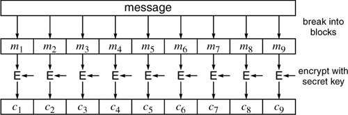
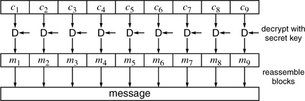
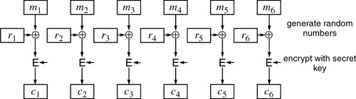
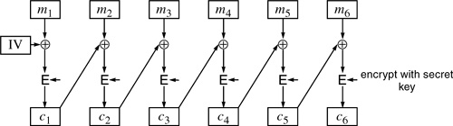
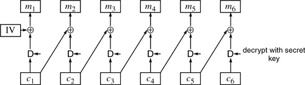
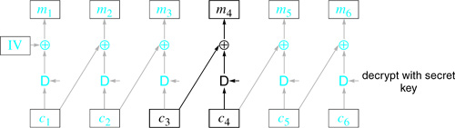
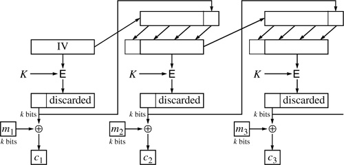
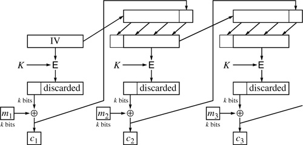
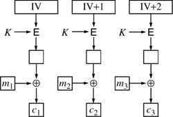

Networking Security Networking Security Networking Security Security Networking Security Networking Security Networking Charlie Kaufman Radia Perlman Mike Speciner Prentice Hall Network Security: Private Communication in a Public World, Second Edition
4.2. Encrypting a Large Message
How do you encrypt a message larger than 64 bits? There are several schemes defined in [DES81]. These schemes would be equally applicable to IDEA or any secret key scheme that encrypted fixed-length blocks, and no doubt one could come up with variant schemes as well. The ones defined in [DES81], and which we'll describe in detail, are:
Electronic Code Book (ECB) Cipher Block Chaining (CBC) k-Bit Cipher Feedback Mode (CFB) k-Bit Output Feedback Mode (OFB) A newer scheme that might be important in the future is:
4.2.1. Electronic Code Book (ECB)
This mode consists of doing the obvious thing, and it is usually the worst method. You break the message into 64-bit blocks (padding the last one out to a full 64 bits), and encrypt each block with the secret key (see Figure 4-1). The other side receives the encrypted blocks and decrypts each block in turn to get back the original message (see Figure 4-2).


There are a number of problems with this approach that don't show up in the single-block case. First, if a message contains two identical 64-bit blocks, the corresponding two blocks of ciphertext will be identical. This will give an eavesdropper some information. Whether it is useful or not depends on the context. We'll give an example where ECB would have a problem. Suppose that the eavesdropper knows that the plaintext is an alphabetically sorted list of employees and salaries being sent from management to payroll, tabularly arranged (see Figure 4-3).
Further suppose that, as luck would have it, each line is exactly 64 bytes long, and the blocks happen to be divided in the salary field between the 1,000's and the 10,000's digit. Since identical plaintext blocks produce identical ciphertext blocks, not only can an eavesdropper figure out which sets of employees have identical salaries, but also which sets of employees have salaries in the same $10,000 ranges. If he can guess a few relative salaries, he will have a pretty good idea of what all the salaries are from this "encrypted" message.
Furthermore, if the eavesdropper is one of the employees, he can alter the message to change his own salary to match that of any other employee by copying the ciphertext blocks from that employee to the corresponding blocks of his own entry. Even a human looking at the resulting message would see nothing awry.
So, ECB has two serious flaws. Someone seeing the ciphertext can gain information from repeated blocks, and someone can rearrange blocks or modify blocks to his own advantage. As a result of these flaws, ECB is rarely used to encrypt messages.
4.2.2. Cipher Block Chaining (CBC)
CBC is a method of avoiding some of the problems in ECB. Using CBC, even if the same block repeats in the plaintext, it will not cause repeats in the ciphertext.
First we'll give an example of how this might be accomplished. Our example is not CBC, but it helps for understanding CBC.
Generate a 64-bit random number ri for each plaintext block mi to be encrypted.  the plaintext block with the random number, encrypt the result, and transmit both the unencrypted random number ri and the ciphertext block ci (see Figure 4-4). To decrypt this, you'd decrypt all the cis, and for each ci, after decrypting it, you'd it with the random number ri. the plaintext block with the random number, encrypt the result, and transmit both the unencrypted random number ri and the ciphertext block ci (see Figure 4-4). To decrypt this, you'd decrypt all the cis, and for each ci, after decrypting it, you'd it with the random number ri.

The main problem with this scheme is efficiency. It causes twice as much information to be transmitted, since a random number has to be transmitted along with each block of ciphertext. Another problem with it is that an attacker can rearrange the blocks and have a predictable effect on the resulting plaintext. For instance, if r2|c2 were removed entirely it would result in m2 being absent in the decrypted plaintext. Or if r2|c2 were swapped with r7|c7, then m2 and m7 would be swapped in the result. Worse yet, an attacker knowing the value of any block mn can change it in a predictable way by making the corresponding change in rn.
Now we can explain CBC. CBC generates its own "random numbers". It uses ci as ri+1. In other words, it takes the previous block of ciphertext and uses that as the random number that will be 'd into the next plaintext. To avoid having two plaintext messages that start the same wind up with the same ciphertext in the beginning, CBC does select one random number, which gets 'd into the first block of plaintext, and transmits it along with the data. This initial random number is known as an IV (initialization vector).

Decryption is simple because is its own inverse.

Since the cost of the is trivial compared to the cost of an encryption, CBC encryption has the same performance as ECB encryption except for the cost of generating and transmitting the IV.
In many cases the security of CBC would not be adversely affected by omitting the IV (or, equivalently, using the value 0 as the IV). However, we'll give one example where it would matter. Suppose the encrypted file of employees and salaries is transmitted weekly. If there were no IV, then an eavesdropper could tell where the ciphertext first differed from the previous week, and therefore perhaps determine the first person whose salary had changed.
Another example is where a general sends information each day saying continue holding your position. The ciphertext will be the same every day, until the general decides to send something else, like start bombing. Then the ciphertext would suddenly change, alerting the enemy.
A randomly chosen IV guarantees that even if the same message is sent repeatedly, the ciphertext will be completely different each time.
Finally, a randomly chosen IV prevents attackers from supplying chosen plaintext to the underlying encryption algorithm even if they can supply chosen plaintext to the CBC.
4.2.2.1. CBC Threat 1ÂModifying Ciphertext Blocks
Using CBC does not eliminate the problem of someone modifying the message in transit; it does change the nature of the threat. Attackers can no longer see repeated values and simply copy or move ciphertext blocks in order to, say, swap the janitor's salary with the salary of the VP of marketing. But they certainly can still modify the ciphertext. What would happen if they changed a block of the ciphertext, say the value of ciphertext block cn? cn gets 'd with the decrypted cn+1 to yield mn+1, so changing cn has a predictable effect on mn+1. For instance, changing bit 3 of cnchanges bit 3 of mn+1. cn also gets decrypted, and then 'd with cn-1 to produce mn. Our attacker cannot know what a particular new value of cn would decrypt to, so changing cn will most likely garble mn to some random 64-bit value.
For example, let's say our attacker knows that the plaintext corresponding to a certain byte range in the ciphertext is her personnel record:
Tacker, Jo A System Security Officer 54,122.10
| | | | | | | | |
Let's say Jo wants to increase her salary by 20K. In this case she knows that the final byte of m7 is the ten-thousands digit of her salary. The bottom three bits of the ASCII for 5 is 101. To give herself a raise of 20K, she merely has to flip the penultimate bit of c6. Since c6 gets 'd into the decrypted c7 (c7 has not been modified, so the decrypted c7 will be the same), the result will be the same as before, i.e. the old m7, but with the penultimate bit flipped, which will change the ASCII 5 into a 7.
Unfortunately for Jo, as a side-effect a value she will not be able to predict will appear in her department field, since she cannot predict what the modified c6 will decrypt to, which will affect m6:
Tacker, Jo A System Security Of#f8Ts9(* 74,122.10
| | | | | | | | |
A human who reads this report and issues checks is likely to suspect something is wrong; however, if it's just a program, it would be perfectly happy with it. And a bank would most likely take the check even if some unorthodox information appeared in what to them is a comment field.
In the above example, Jo made a change she could control in one block at the expense of getting a value she could neither control nor predict in the preceding block.
4.2.2.2. CBC Threat 2ÂRearranging Ciphertext Blocks
Suppose Jo knows the plaintext and corresponding ciphertext of some message. So she knows m1, m2,...mn. And she knows IV, c1, c2,...cn. She will also know what each of the ci decrypt to, since the decrypted version of ci is ci-1 mi (see Figure 4-7).

Given this knowledge, she can consider each of the ci as a building block and construct a ciphertext stream using any combination of ci and she will be able to calculate what the corresponding plaintext would be.
How could this be useful? Well, admittedly it's stretching a bit, though people in the security field enjoy stretching. One of the ways to combat threat 1 is to attach a CRC to the plaintext before encrypting it with CBC. That way if Jo modifies any of the ciphertext blocks, the CRC will not match the message and a computer can verify that the message has been tampered with.
Still following? Well, suppose a 32-bit CRC is chosen. Then there is a 1 in 232 chance that the CRC will happen to be correct after the message is tampered with. Suppose Jo doesn't care what she garbles the message to. She just wants the garbage accepted by the computer on the other side, knowing that it will check the CRC. Jo can try constructing lots of ciphertext streams out of c1, c2,...cn, calculate the resulting plaintext from each one, and then test the resulting plaintext to see if the CRC comes out correct. On the average she will only have to try 231 arrangements before being able to find a message that will have a correct CRC.
What harm could Jo do by garbling a message into something she could not control the contents of, but would be accepted by the computer on the other side? Perhaps Jo is just being malicious, and wants to destroy some data being loaded across the network. But there is a subtle way in which Jo can actually control the garbling of the message to a small extent. Suppose she moves contiguous blocks; for instance, she might move cn and cn+1 to some other place. Then the original mn+1 will appear in that other position. Perhaps if mn+1 contains the president's salary, Jo can swap blocks so that her salary will be changed to his, but then she'll be forced to pretty much totally garble the entire rest of the file in order to find an arrangement of blocks that will result in a correct CRC.
To prevent Jo from being able to rearrange blocks to find something that will have a correct CRC, a 64-bit CRC could be used. This would certainly suffice if the only attack on the CRC inside CBC encoding was a brute force attack such as we described. There have been some interesting attacks suggested in the theoretical community [JUEN84] though these attacks are not practical. An encryption mode that protects both the confidentiality and the authenticity of a message using a single cryptographic pass over the data has been the holy grail of cryptographic protocol design for many years, with many proposals subsequently discredited. There are some new ones that look promising (for example, see §4.3.5 Offset Codebook Mode (OCB)), but none has been formally standardized.
4.2.3. Output Feedback Mode (OFB)
Output feedback mode is a stream cipher. Encryption is performed by ing the message with the one-time pad generated by OFB.
Let's assume that the stream is created 64 bits at a time. To start, a random 64-bit number is generated, known as the IV (as in CBC mode). Let's call that b0. Then b0 is encrypted (using the secret key) to get b1, which is in turn encrypted to get b2, and so forth. The resulting one-time pad is b0|b1|b2|b3|....
To encrypt a message, merely it with as many bits of b0|b1|b2|b3|... as necessary. The result is transmitted along with the IV. The recipient computes the same one-time pad based on knowledge of the secret key and the IV. To decrypt the message, the recipient merely s it with as many bits of b0|b1|b2|b3|... as necessary.
The advantages of a system like this are:
The one-time pad can be generated in advance, before the message to be encrypted is known. When the message arrives to be encrypted, no costly cryptographic operations are needed. Instead only is required, and is extremely fast. If some of the bits of the ciphertext get garbled, only those bits of plaintext get garbled, as opposed to in CBC mode where if cn is garbled then mn will be completely garbled and the same portion of mn+1 as was garbled in cn will be garbled. A message can arrive in arbitrarily sized chunks, and each time a chunk appears, the associated ciphertext can be immediately transmitted. In contrast, with CBC, if the message is arriving a byte at a time, it cannot be encrypted until an entire 64-bit block of plaintext is available for encryption. This results in either waiting until 7 more bytes arrive, or padding the plaintext to a multiple of 8 bytes before encrypting it, which yields more ciphertext to be transmitted and decrypted.
The disadvantages of OFB are:
If the plaintext and ciphertext are known by a bad guy, he can modify the plaintext into anything he wants by simply ing the ciphertext with the known plaintext, and ing the result with whatever message he wants to transmit.
The FIPS document specifies OFB as being capable of being generated in k-bit chunks. The description above would be equivalent to 64-bit OFB as documented in [DES81]. The way k-bit OFB (see Figure 4-10) works is as follows. The input to the DES encrypt function is initialized to some IV. If the IV is less than 64 bits long, it is padded with 0's on the left (most significant portion). The output will be a 64-bit quantity. Only k bits are used, which happen to be specified in [DES81] as the most significant k bits. Cryptographically, any k bits would do, though it is nice to standardize which bits will be selected so that implementations will interoperate. So, we've generated the first k bits of the one-time pad. Now the same k bits are shifted into the rightmost portion of the input, and what was in that register is shifted k bits to the left. Now k more bits of one-time pad are selected, as before.
4.2.4. Cipher Feedback Mode (CFB)
CFB (see Figure 4-9) is very similar to OFB, in that k bits at a time are generated and 'd with k bits of plaintext. In OFB the k bits that are shifted into the register used as the input to the DES encrypt are the output bits of the DES encrypt from the previous block. In contrast, in CFB, the k bits shifted in are the k bits of ciphertext from the previous block. So in CFB the one-time pad cannot be generated before the message is known (as it can be in OFB).
It is sensible to have k-bit CFB with k something other than 64, and in particular k = 8 makes sense. With OFB or CBC, if characters are lost in transmission, or extra characters are added to the ciphertext stream, the entire rest of the transmission is garbled. With 8-bit CFB, as long as the error is an integral number of bytes, things will resynchronize. If a byte is lost in transmission, one byte of plaintext will be lost and the next 8 bytes will be garbled. However, after that, the plaintext will decrypt properly. If a byte is added to the ciphertext stream, then a byte of garbage will be added to the plaintext stream, and the following 8 bytes of plaintext will be garbled, but after that it will decrypt properly. It does have the disadvantage that every byte of input requires a DES operation.


CFB-encrypted messages are somewhat less subject to tampering than either CBC or OFB. With 8-bit CFB it is possible for an attacker to change any individual byte of plaintext in a predictable way at the cost of unpredictably garbling the next 8 bytes. With 64-bit CFB it is possible for an attacker to modify any 64-bit block in a predictable way at the cost of unpredictably garbling the next 64-bit block. There is no block-rearranging attack as with CBC, though whole sections of the message can be rearranged at the cost of garbling the splice points.
In principle, CFB need not be used on a byte boundary. It could iterate for any integer number of bits up to a full block. In practice, it's only used on byte boundaries or as a full block. When done in full-block mode, it has performance comparable to ECB, CBC, and OFB; it has the OFB advantage of being able to encrypt and send each byte as it is known; it lacks OFB's ability to compute a substantial amount of pad ahead; and it detects alterations better than OFB but not as well as CBC.
4.2.5. Counter Mode (CTR)
Counter mode is similar to Output Feedback Mode in that a one-time pad is generated and 'd with the data. It is different in that instead of chaining by encrypting each one-time pad block to get the next one, OFB increments the IV and encrypts the result to get successive blocks of the one-time pad.

The main advantage of counter mode is that, like OFB, the cryptography can be pre-computed and encryption is simply an , but like CBC, you can decrypt the message starting at any point rather than being forced to start at the beginning. This makes counter mode ideal for applications like encrypting a randomly accessed file. The subset of the data you will need and the order in which you will need it is unpredictable. Like OFB, CTR loses security if different data is encrypted with the same key and IV. An attacker could get the of two plaintext blocks by taking the of the two corresponding ciphertext blocks.
|